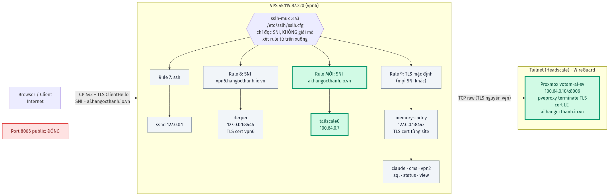
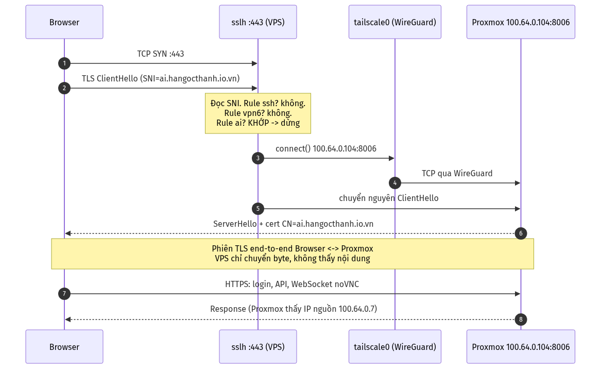
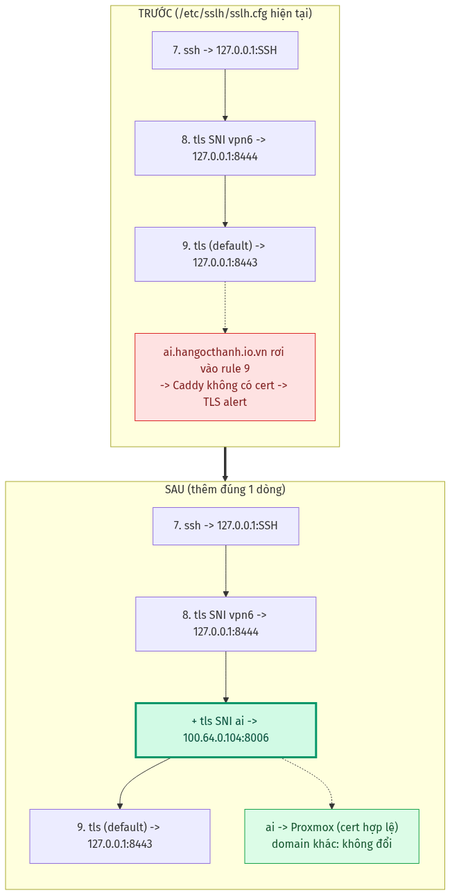
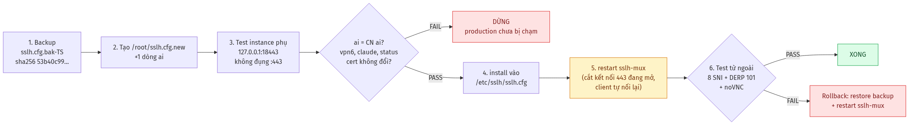

Public Proxmox qua https://ai.hangocthanh.io.vn
VPS 45.119.87.220 · sslh-mux SNI passthrough → Tailscale 100.64.0.104:8006 · ĐỀ XUẤT — CHƯA APPLY
1. Kiến trúc tổng thể
sslh chỉ đọc SNI trong TLS ClientHello, không giải mã. Rule xét từ trên xuống, khớp rule đầu tiên thì dừng. Phần xanh là phần thêm mới, phần xám giữ nguyên.

2. Một request đi như thế nào
TLS nối thẳng Browser ↔ Proxmox, cert là của Proxmox. WebSocket/noVNC chạy sẵn. Proxmox thấy IP nguồn 100.64.0.7.

3. Config trước / sau
Chỉ thêm đúng 1 dòng, đặt sau rule vpn6 và trước rule TLS mặc định.

--- /etc/sslh/sslh.cfg
+++ /etc/sslh/sslh.cfg
{ name: "tls"; host: "127.0.0.1"; port: "8444"; sni_hostnames: [ "vpn6.hangocthanh.io.vn" ]; },
+ { name: "tls"; host: "100.64.0.104"; port: "8006"; sni_hostnames: [ "ai.hangocthanh.io.vn" ]; },
{ name: "tls"; host: "127.0.0.1"; port: "8443"; }
4. Quy trình triển khai
Bước 5 (restart sslh-mux, KillMode=control-group) sẽ cắt các kết nối :443 đang mở; client tự nối lại.
